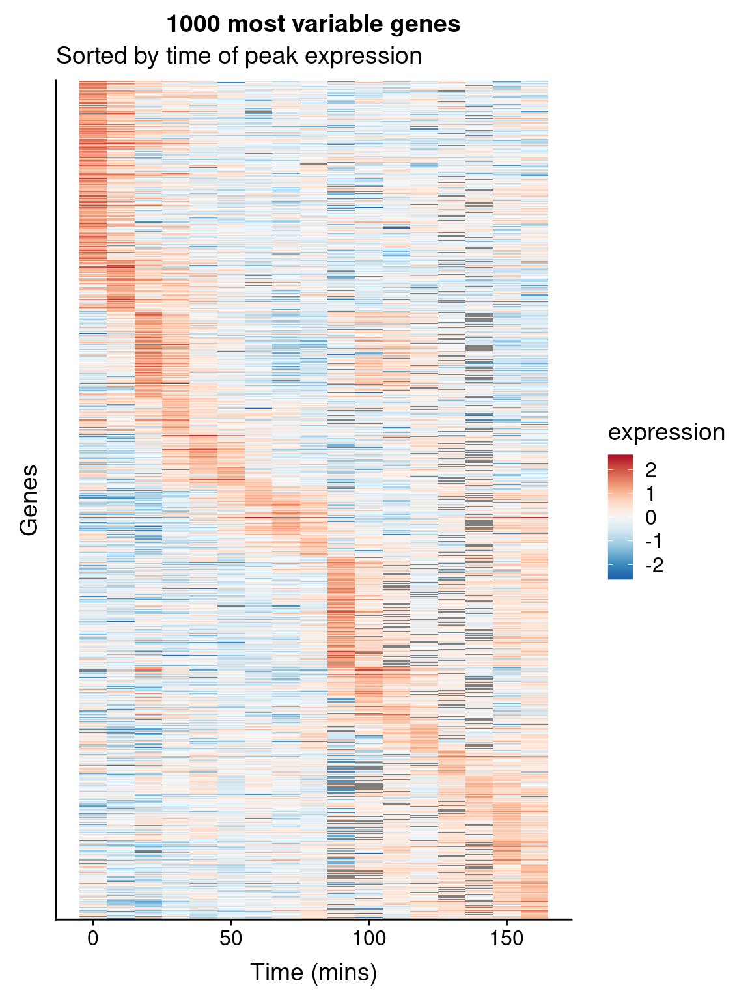

Chapter 8 Vectors and Functions
8.1 Libraries
library(tidyverse)
library(magrittr)8.2 Vector Mathematics in R
R vectors support basic arithmetic operations that correspond to the same operations on geometric vectors. For example:
> x <- 1:15
> y <- 10:24
> x
[1] 1 2 3 4 5 6 7 8 9 10 11 12 13 14 15
> y
[1] 10 11 12 13 14 15 16 17 18 19 20 21 22 23 24
> x + y # vector addition
[1] 11 13 15 17 19 21 23 25 27 29 31 33 35 37 39
> x - y # vector subtraction
[1] -9 -9 -9 -9 -9 -9 -9 -9 -9 -9 -9 -9 -9 -9 -9
> x * 3 # multiplication by a scalar
[1] 3 6 9 12 15 18 21 24 27 30 33 36 39 42 45R also has an operator for the dot product, denoted %*%. This operator also designates matrix multiplication, which we will discuss next week. By default this operator returns an object of the R matrix class. If you want a scalar (or the R equivalent of a scalar, i.e. a vector of length 1) you need to use the drop() function.
> z <- x %*% x
> class(z) # note use of class() function
[1] "matrix"
> z
[,1]
[1,] 1240
> drop(z)
[1] 1240In lecture we saw that many useful geometric properties of vectors could be expressed in the form of dot products. Let’s start with some two-dimensional vectors where the geometry is easy to visualize:
> a <- c(2, 0) # the point (2,0)
> b <- c(1, 3) # the point (1,3)To draw our vectors using ggplot, we’ll need to create a data frame with columns representing the x,y coordinates of the end-points of our vectors:
df <- data.frame(x.end = c(a[1], b[1]),
y.end = c(a[2], b[2]),
label = c('a', 'b'))
ggplot(df) +
geom_segment(aes(x=0, y = 0, xend = x.end, yend = y.end, color=label),
arrow = arrow()) +
labs(x = "x-coordinate", y = "y-coordinate") +
coord_fixed(ratio = 1) + # insures x and y axis scale are same
theme_bw()
Let’s see what the dot product can tell us about these vectors. First recall that we can calculate the length of a vector as the square-root of the dot product of the vector with itself (\(\vert\vec{a}\vert^2 = \vec{a} \cdot \vec{a}\))
> len.a <- drop(sqrt(a %*% a))
> len.a
[1] 2
> len.b <- drop(sqrt(b %*% b))
> len.b
[1] 3.162278How about the angle between \(a\) and \(b\)? First we can use the dot product and the previously calculated lengths to calculate the cosine of the angle between the vectors:
> cos.ab <- (a %*% b)/(len.a * len.b)
> cos.ab
[,1]
[1,] 0.3162278To go from the cosine of the angle to the angle (in radians) we need the arc-cosine function, acos():
> acos(cos.ab) # given angle in radians
[,1]
[1,] 1.2490468.3 Writing Your Own Functions in R
So far we’ve been using a variety of built in functions in R. However the real power of a programming language is the ability to write your own functions. Functions are a mechanism for organizing and abstracting a set of related computations. We usually write functions to represent sets of computations that we apply frequently, or to represent some conceptually coherent set of manipulations to data.
The general form of an R function is as follows:
funcname <- function(arg1, arg2) {
# one or more expressions that operate on the fxn arguments
# last expression is the object returned
# or you can explicitly return an object
}To make this concrete, here’s an example where we define a function to calculate the geometric length of a vector using dot products:
vec.length <- function(x) {
return(sqrt(drop(x %*% x)))
}Since R returns the value of the last expression in the function, the return call is optional and we could have simply written:
vec.length <- function(x) {
sqrt(drop(x %*% x))
}Very short and concise functions are often written as a single line. Here’s a single line version in which I also use pipes to unpack the nested function calls
vec.length <- function(x) {(x %*% x) %>% drop %>% sqrt }The vec.length function takes one argument, x, and calculates the length of the vector represented by x. Having defined the function we can immediately put it to use:
vec.length(b)
[1] 3.162278If you type a function name without parentheses R shows you the function’s definition. This works for built-in functions as well (thought sometimes these functions are defined in C code in which case R will tell you that the function is a .Primitive).
8.4 Function arguments
Function arguments can specify the data that a function operates on or parameters that the function uses. Function arguments can be either required or optional. In the case of optional arguments, a default value is assigned if the argument is not given.
Take for example the log function. If you examine the help file for the log function (type ?log now) you’ll see that it takes two arguments, refered to as x and base. The argument x represents the numeric vector you pass to the function and is a required argument (see what happens when you type log() without giving an argument). The argument base is optional. By default the value of base is \(e = 2.71828\ldots\). Therefore by default the log function returns natural logarithms. If you want logarithms to a different base you can change the base argument as in the following examples:
> log(2) # log of 2, base e
[1] 0.6931472
> log(2,2) # log of 2, base 2
[1] 1
> log(2, 4) # log of 2, base 4
[1] 0.5Because base 2 and base 10 logarithms are fairly commonly used, there are convenient aliases for calling log with these bases.
> log2(8)
[1] 3
> log10(100)
[1] 28.5 Writing functions with optional arguments
To write a function that has an optional argument, you can simply specify the optional argument and its default value in the function definition as so:
# a function to substitute missing values in a vector
sub.missing <- function(x, sub.value = -99){
x[is.na(x)] <- sub.value
return(x)
}You can then use this function as so:
> m <- c(1, 2, NA, 4)
> sub.missing(m, -999) # explicitly define sub.value
[1] 1 2 -999 4
> sub.missing(m, sub.value = -333) # more explicit syntax
[1] 1 2 -333 4
> sub.missing(m) # use default sub.value
[1] 1 2 -99 4
> m # notice that m wasn't modified within the function
[1] 1 2 NA 4Notice that when we called sub.missing with our vector m, the vector did not get modified in the function body. Rather a new vector, x was created within the function and returned. However, if you did the missing value subsitute outside of a function call, then the vector would be modified:
> n <- c(1, 2, NA, 4)
> n[is.na(n)] <- -99
> n
[1] 1 2 -99 48.6 Putting R functions in Scripts
When you define a function at the interactive prompt and then close the interpreter your function definition will be lost. If you put your functions in an R notebook, you have a record of your functions but you can’t use those function in another notebook without copying and pasting codeblock. The simple way around this is to define your R functions in a script that you can than access at any time.
In RStudio choose File > New File > R Script. This will bring up a blank editor window. Type your function(s) into the editor. Everything in this file will be interpretted as R code, so you should not use the code block notation that is used in Markdown notebooks. Save the source file in your R working directory with a name like vecgeom.R.
# functions defined in vecgeom.R
vec.length <- function(x) {
# calculate the geometric length of a vecotr
sqrt(drop(x %*% x))
}
unit.vector <- function(x) {
# Return a unit vector in the same direction as x
x/vec.length(x)
}Notice that it is possible (and in fact typical) to use one function you define in writing another function (in this case we used vec.length() to write unit.vector())
Once your functions are in a script file you can make them accesible by using the source function, which reads the named file as input and evaluates any definitions or statements in the input file (See also the Source button in the R Studio GUI):
source("vecgeom.R")Note that if you change the source file, such as correcting a mistake or adding a new function, you need to call the source function again to make those changes available.
Having sourced the file you can now use your functions like so:
> x <- c(1, 0.4)
> vec.length(x)
[1] 1.077033
> ux <- unit.vector(x)
> ux
[1] 0.9284767 0.3713907
> a <- 1:5
> vec.length(a)
[1] 7.416198
> unit.vector(a)
[1] 0.1348400 0.2696799 0.4045199 0.5393599 0.6741999Note that our functions, vec.length() and unit.vector(), work with vectors of arbitrary dimension.
8.7 Simple statistics in vector form
Now let’s turn our attention to seeing how to calculate a variety of simple statistics such as the mean, variance, etc. in terms of vector operations.
To illustrate these oeprations we’ll use the I. setosa data from the iris examplar data set.
setosa <- filter(iris, Species == "setosa")8.7.1 Mean
First let’s calculate the mean for the Sepal.Length variable. Referring back to the slides for today’s lecture, we see we can calculate the mean as: \[ \bar{x} = \frac{\vec{1} \cdot \vec{x}}{\vec{1} \cdot \vec{1}} \]
> sepal.length <- setosa$Sepal.Length
> ones <- rep(1, length(sepal.length)) # 1-vector of length n
> mean.sepal.length <- (ones %*% sepal.length)/(ones %*% ones)
> mean.sepal.length %<>% drop # use drop to convert back to scalar
> mean.sepal.length
[1] 5.006Let’s compare our calculation against the built-in mean function:
> mean(sepal.length)
[1] 5.0068.7.2 Variance and standard deviation
Now let’s create a mean centered vector from sepal.length, which we’ll refer to as the vector of deviates about the mean:
> sepal.length.deviates <- sepal.length - mean.sepal.lengthUsing the vector of deviates we can easily calculate the variance and standard deviation of sepal.length:
> n <- length(sepal.length.deviates)
> var.sepal.length <- (sepal.length.deviates %*% sepal.length.deviates)/(n-1)
> var.sepal.length
[,1]
[1,] 0.124249
> sd.sepal.length <- sqrt(var.sepal.length)
> sd.sepal.length
[,1]
[1,] 0.3524897Again, we can compare our calculations to the built-in var() and sd() functions:
> var(sepal.length)
[1] 0.124249
> sd(sepal.length)
[1] 0.35248978.7.3 Covariance and correlation
Now let’s consider the common measures of bivariate association, covariance and correlation. We’ll examine the relationship between sepal length and width:
sepal.width <- setosa$Sepal.Width
mean.sepal.width <- drop((ones %*% sepal.width)/(ones %*% ones))
sepal.width.deviates <- sepal.width - mean.sepal.width
var.sepal.width <- drop((sepal.width.deviates %*% sepal.width.deviates)/(n-1))
sd.sepal.width <- drop(sqrt(var.sepal.width))With the vector of sepal width deviates in hand we can now calculate covariances:
> cov.swidth.slength <- (sepal.length.deviates %*% sepal.width.deviates)/(n-1)
> cov.swidth.slength
[,1]
[1,] 0.09921633
> cov(sepal.length, sepal.width) # and compare to built-in covariance
[1] 0.09921633And correlations:
> corr.swidth.slength <-
+ (sepal.length.deviates %*% sepal.width.deviates) / (vec.length(sepal.length.deviates) * vec.length(sepal.width.deviates))
> corr.swidth.slength
[,1]
[1,] 0.7425467
> cor(sepal.length, sepal.width) # and compare to built-in correlation
[1] 0.7425467Alternately, we could have calculated the correlation more simply as follows:
> cov.swidth.slength/(sd.sepal.length * sd.sepal.width)
[,1]
[1,] 0.7425467